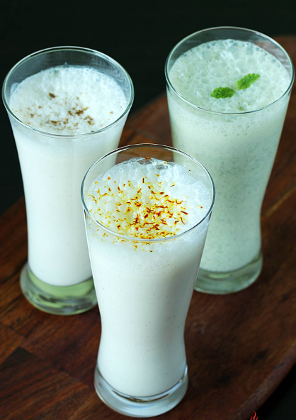

LASSI

DESCRIPTION
Lassi is a traditional yogurt drink that’s popular in North India. Made with yogurt, water or milk & various seasonings, it can be made to a either sweet or salty drink. Sweet Lassi has ingredients like sugar, ground cardamoms and some times milk or cream. Salt lassi has simple ingredients like salt and water. You will find numerous flavor variation in it.
INGREDIENTS
-
ice cubes
- 1 ¾ cups plain yogurt
- 1 ½ cups ice water
- 6 cubes ice, crushed
- 2 teaspoons white sugar
- 1 pinch sal
HOW TO MAKE LASSI
- Fill 6 tall glasses with ice cubes.
- Place yogurt, ice water, crushed ice, sugar, and salt in a blender; blend until
- Pour over ice cubes in the glasses to serve.
TIPS
- You can substitute 1/2 teaspoon salt for the sugar for a savory lassi.
BACK TO MAIN MENU